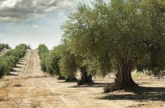

Plantas Emblemáticas de Jaén
- Romero (Rosmarinus officinalis)
- Olivar (Olea europaea)
- Tomillo (Thymus vulgaris)
Imágenes de la Flora de Jaén

Tabla de Especies
| Nombre Científico | Nombre Común |
|---|---|
| Rosmarinus officinalis | Romero |
| Olea europaea | Olivar |
| Thymus vulgaris | Tomillo |